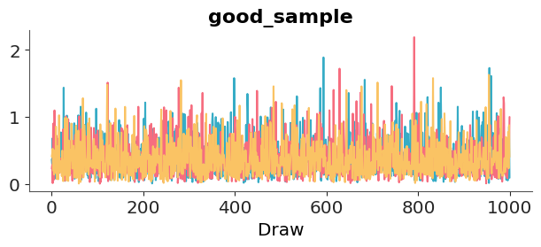
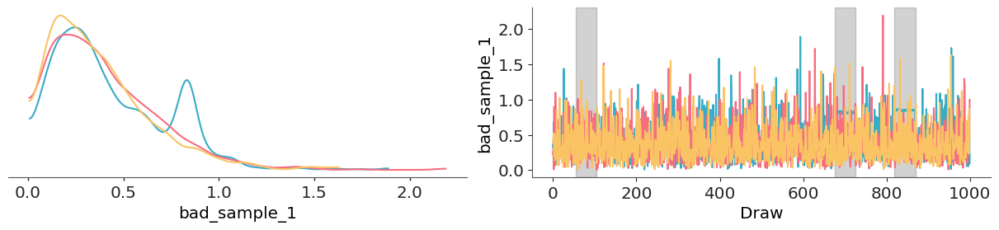
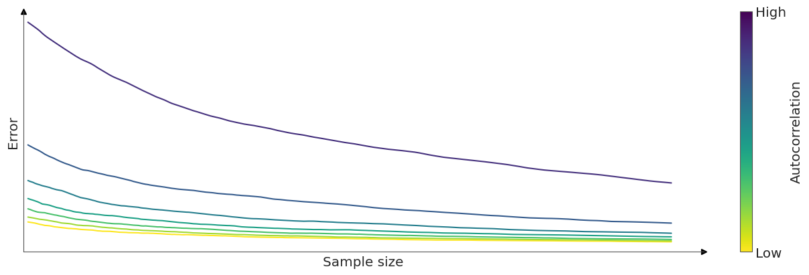
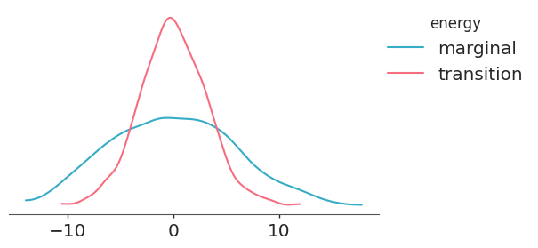
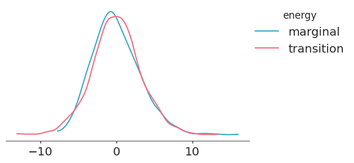

The Achilles heel of computing posterior distributions is, more often than not, the computation of the denominator of Bayes’s theorem. Markov Chain Monte Carlo Methods (MCMC), such as Metropolis, Hamiltonian Monte Carlo (and its variants like NUTS) are clever mathematical and computational devices that let us circumvent this problem. Check Brooks et al. (2011) for a thorough treatment of Bayesian inference and MCMC techniques. The main idea is based on sampling values of the parameters of interest from an easy-to-sample distribution and then applying a rule, known as the Metropolis acceptance criterion, to decide if you accept or not that proposal. By applying this rule we ensure that even when we propose samples from an arbitrary distribution we end up getting samples from the correct posterior distribution. The better performance of NUTS over Metropolis can be explained by the fact that the former uses a clever way to propose values.
While MCMC methods can be successfully used to solve a huge variety of Bayesian models, they have some trade-offs. Most notably, finite MCMC chains are not guaranteed to converge to the true posterior distribution. Thus, a key step is to check whether we have a valid sample, otherwise, any analysis from it will be totally flawed.
There are several tests we can perform, some are visual and some are numerical. These tests are designed to spot problems with our samples, but they are unable to prove we have the correct distribution; they can only provide evidence that the sample seems reasonable.
In this chapter, we will cover the following topics:
Trace plots
Rank plots
\(\hat R\)
Effective Sample Size
Divergences
4.1 From the MCMC theory to practical diagnostics
The theory describes certain behaviors of MCMCs methods, many diagnoses are based on evaluating whether the theoretical results are empirically verified. For example, MCMC theory says that:
The initial value is irrelevant, we must always arrive at the same result
The samples are not really independent, but the value of a point only depends on the previous point, there are no long-range correlations.
If we look at the sample as a sequence we should not be able to find any patterns.
For example, for a sufficiently long sample, the first portion must be indistinguishable from the last (and so should any other combination of regions).
For the same problem, each sample generated will be different from the others, but for practical purposes, the samples should be indistinguishable from each other.
We are going to see that many diagnostics need multiple chains. Each chain is an independent MCMC run. The logic is that by comparing independent runs we can more easily sport issues than running a single instance. This multiple-chain approach also takes advantage of modern hardware. If you have a CPU with 4 cores you can get 4 independent chains in essentially the same time that one single chain.
To keep the focus on the diagnostics and not on any particular Bayesian model. We are going to first create 3 synthetic samples, we will use them to emulate samples from a posterior distribution.
good_sample: A random sample from a Gamma(2, 5). This is an example of a good sample because we are generating independent and identically distributed (iid) draws. This is the ideal scenario.
bad_sample_0: We sorted good_sample, split it into three chains, and then added a small Gaussian error. This is a representation of a bad sample because values are not independent (we sorted the values!) and they do not come from the same distribution. This represents a scenario where the sampler has very poor mixing.
bad_sample_1: we start from good_chains, and turn into a poor sample by randomly introducing portions where consecutive samples are highly correlated to each other. This represents a common scenario, a sampler can resolve a region of the parameter space very well, but get stuck into one or more regions.
After reading this chapter a good exercise is to come back here and modify these synthetic samples and run one or more diagnostics. If you want to make the exercise even more fun challenge yourself to predict what the diagnostics will be before running. Or even the other way around, how you should change the samples to get a given result. This is a good test of your understanding and a good way to correct possible misunderstandings.
4.2 Trace plots
A trace plot is created by drawing the sampled values at each iteration step. Ideally, we should expect to see a very noisy plot, some people call it a caterpillar. The reason is that draws should be uncorrelated from each other, the value of a draw should not provide any hint about the previous or next draw. Also, the draws from the first iterations should be indistinguishable from the ones coming from the last iterations the middle iterations, or any other region. The ideal scenario is the lack of any clear pattern as we can see at the right panel of Figure 4.1.
In ArviZ by calling the function azp.plot_trace_dist(.) we get a trace plot on the right and on the left a KDE (we can also plot ECDFs, or histograms). Figure 4.1 is an example of this. The KDE/ECDF/histogram can help to spot differences between chains, ideally, distributions should overlap.
Figure 4.1: Trace plot and Kernel Density Estimate (KDE) of a sample without issues
If you just want the trace without the density call azp.plot_trace(.)
azp.plot_trace(sample, var_names="good_sample");

Figure 4.2: Trace plot of a sample without issues
Now let’s see an example of a bad sample. Figure 4.3 shows two problems. On the one hand, each chain is visiting a different region of the parameter space. We can see this from the trace plot itself and the KDE. On the other hand, even within each region, the sampler is having trouble properly exploring the space, notice how it keeps moving up, instead of being stationary.
Figure 4.3: Trace plot of 4 chains that has not converged
Finally from Figure 4.4, we can see another common scenario. While the overall trace appears acceptable, there are specific regions where the sampler gets stuck. To highlight these problematic areas, we’ve added gray bands across the trace. In the first region, the issue is less apparent because the stuck chain is overlapped by others. In contrast, the second and third regions make the issue easier to spot, though we still need to inspect the trace closely to see the problem.
Code
pc = azp.plot_trace_dist(sample, var_names="bad_sample_1", compact=False)pc.coords = {"column": "trace"}azp.add_bands(pc, stuck)

Figure 4.4: Trace plot showing a sampler being stuck in 3 regions (see gray bands). Because of the overlap, it’s not easy to spot the problem for the first region.
Trace plots are very popular in the Bayesian literature, they can be useful to spot some problems, but they have some limitations as we saw in the previous example. For example, it is difficult to spot problems when the chains overlap. In the next section we will see a modern alternative to trace plots, the rank plot.
4.3 Rank plots
Rank plots provide an alternative way to diagnose MCMC samples (Vehtari et al. 2021). Unlike trace plots, which display sample values ordered by iteration, rank plots transform the sampled values into ranks before visualization.
Let see how it works: For each parameter, we pool all chains together and sort the draws from lowest to highest. The smallest value is assigned rank 1, the next rank 2, and so on, up to the total number of samples (equal to the number of chains multiplied by the number of draws per chain). This process converts parameter values into ranks. Next, we separate the ranks back into their original chains, collecting all ranks from the first chain, the second chain, and so on. If the MCMC sampling has no issues, the chains should be indistinguishable, and the ranks within each chain should follow a uniform distribution. In a well-mixed sampler, ranks should be evenly distributed among chains, with no chain favouring a specific range.
To assess uniformity, one simple approach is to plot a histogram of the ranks. However, histogram results can be sensitive to bin choices. An alternative is to plot the empirical cumulative distribution function (CDF) of the ranks. This method avoids binning and does not requires any complex processing. Instead of using raw ranks (ranging from 1 to the total number of samples), we can use fractional ranks, which values range from 0 to 1. In the ideal case, the empirical CDF follows the standard uniform distribution—a diagonal line from (0,0) to (1,1), as shown in Figure 5.6. Deviations from this line may indicate sampling issues.
pz.Uniform(0, 1).plot_cdf(figsize=(6, 4));
Figure 4.5: The CDF of the standard Uniform distribution.
The disadvantage of such visualization is that all the “action” is close to the diagonal line and most of the figure is just blank space, specially as the MCMC sample size increase. A simple trick to improve the data-ink ratio is to plot the \(\Delta\)-ECDF, i.e. (observed ECDF - expected ECDF). Then a uniform distribution is a flat line that goes from (0,0) to (1, 0).
The following figures shows fractional rank plots for good_sample, bad_sample_0 and bad_sample_1.
Code
azp.plot_rank(sample, var_names=["good_sample"]);
Figure 4.6: Rank plot for good_sample
For good_sample we can see that ranks looks relative flat and deviations are within the envelope. In sharp contrast bad_sample_0 looks awful, deviations are very large as both chains belong to different distributions. The envelopes computation does not take into account autocorrelation, so it is recommend to thin the draws as discussed in Section 4.4.3. plot_rank does this automatically. To disable thinning we can do azp.plot_rank(..., thin=False), as we did for Figure 4.7.
Finally, bad_sample_1 also shows problems, see how chain 0 (blue) get out of the envelope. Notice also how the envelope and lines looks very “squared-shaped” compared with those from Figure 4.6. This is indicating a relatively low ESS (high thinning). This is a consequence of the chains being stuck in some regions as shown in Figure 4.4.
Rank plots provide a more reliable way to diagnose MCMC sampling issues compared to trace plots. While trace plots can reveal mixing problems, they often become cluttered, making it difficult to identify subtle issues like chains exploring different regions unevenly. In contrast, rank plots summarize sampling behaviour more effectively by checking for uniformity across chains, helping to detect biases, poor mixing, or convergence issues in a more interpretable way. This makes them a powerful method for visually assessing MCMC performance.
Finally, we want to mention that we can use \(\Delta\)-ECDF plots to visually inspect any quantity that is expected to be uniformly distributed, not just the ranks. For example, in Chapter 5 we use them to compare the posterior predictive distribution to the observed data (see Figure 5.8 and Figure 5.9).
4.4\(\hat R\) (R-hat)
Plots are often useful for discovering patterns, but sometimes we want numbers, for example when quickly evaluating a large number of parameters it may be easier to look at numbers than plots. Number are also easier to plug into automatic routine, that call for human attention only if some threshold is exceeded. This may be necessary when running a large number of models, for example in a simulation study.
\(\hat R\) is a numerical diagnostic that answers the question Did the chains mix properly? But I also like to think of it as the score assigned by a jury in a trace (or rank) plot contest. The central idea is to compare the variance between chains with the variance within each chain. The version implemented in ArviZ and described in Vehtari et al. (2021) does several other things under the hood, but the main idea is the same.
Ideally, we should get \(\hat R = 1\), in practice \(\hat R \lessapprox 1.01\) are considered safe and in the first modeling phases, even higher values like \(\hat R \approx 1.1\) may be fine.
Using ArviZ we can get the \(\hat R\) with azp.rhat(⋅), azp.summary(⋅) and azp.plot_forest(⋅, r_hat=True)
Since the samples of an MCMC are (auto)correlated, the amount of “useful” information is less than a sample of the same size but iid. Figure 4.9 can help us develop intuition. In this figure, we analyze the error incurred while computing an estimate (such as the mean) from samples of different size, considering varying degrees of autocorrelation. The results represent averages from 1000 repetitions.
We can see that the error goes down as the sample size increases and we can also see that the lower the autocorrelation the smaller the sample size to achieve an estimate with a given error. In other words the higher the autocorrelation the larger the number of sample we will need to achieve the a given precision.
Show the code for more details
def generate_autocorrelated_sample(original, rho):""" Generates an autocorrelated sample from original. Parameters: ---------- sample: numpy array, The original sample rho: float, Desired autocorrelation value Returns: -------- new_sample: numpy array, autocorrelated sample """ n =len(original) y = np.copy(original) mean = np.mean(original)for i inrange(1, n): y[i] += rho * (y[i-1]-mean) + np.random.randn()return ymean =0lag =30size =300iid_samples = pz.Normal(mean, 1).rvs((1000, size))rhos = np.linspace(0, 0.90, 7)N =len(rhos)fig, ax = plt.subplots(figsize=(12, 4))for k, rho inenumerate(rhos): auto_samples = np.stack([generate_autocorrelated_sample(iid_sample, rho) for iid_sample in iid_samples]) auto_error = []for i inrange(1, size): auto_error.append(np.mean(((np.mean(auto_samples[:,:i] - mean, 1)**2)**0.5))) ax.plot(auto_error[lag:], color=plt.cm.viridis_r(k/N))sm = plt.cm.ScalarMappable(cmap=plt.cm.viridis_r)cbar = plt.colorbar(sm, ax=ax, label='Autocorrelation', ticks=[0, 1])cbar.ax.set_yticklabels(['Low', 'High'])cbar.ax.tick_params(length=0)ax.set_yticks([])ax.set_ylabel("Error")ax.set_xticks([])ax.set_xlabel("Sample size")ax.set_ylim(bottom=0)ax.set_xlim(-2)ax.spines["top"].set_visible(False)ax.spines["right"].set_visible(False)ax.plot(1, 0, ">k", transform=ax.get_yaxis_transform(), clip_on=False)ax.plot(-2, 1, "^k", transform=ax.get_xaxis_transform(), clip_on=False)

Figure 4.9: Average error as a function of the sample size for different autocorrelation values.
As for MCMC samples, the sample size can be misleading, we instead estimate the effective sample size (ESS) (Vehtari et al. 2021), that is, the size of a sample with the equivalent amount of information but without autocorrelation. Figure 4.10 shows how when the sample size increases the ESS tends to increase too, and more importantly, it shows that the slope is higher for lower autocorrelation values.
One way to use the ESS is as a minimum requirement for trustworthy MCMC samples. It is recommended the ESS to be greater than 100 per chain. That is, for 4 chains we want a minimum of 400 effective samples.
Note
The ESS can also be used as a metric of the efficiency of MCMC sampling methods. For instance, we may want to measure the ESS per sample (ESS/n), a sampler that generates an ESS/n closer to 1 is more efficient than a sampler that generates values closer to 0. Other common metrics are the ESS per second, and the ESS per likelihood evaluation.
We see that azp.summary(⋅) returns two ESS values, ess_bulk and ess_tail. This is because different regions of the parameter space may have different ESS values since not all regions are sampled with the same efficiency. Intuitively, one may think that when sampling a distribution like a Gaussian it is easier to obtain better sample quality around the mean than around the tails, simply because we have more samples from that region. For some models, it could be the other way around, but the take-home message remains, not all regions are necessarily sampled with the same efficiency
azp.summary(sample, kind="diagnostics")
ess_bulk
ess_tail
r_hat
mcse_mean
mcse_sd
good_sample
4184.08
3580.03
1.00
0.00
0.00
bad_sample_0
4.46
4.91
3.24
0.13
0.15
bad_sample_1
317.18
155.69
1.02
0.02
0.02
If we are going to use the MCMC samples to calculate central values such as means or medians then we have to make sure that the ess_bulk is sufficiently large, however, if we want to calculate intervals such as an HDI 94% we have to make sure that ess_tail be appropriate.
ArviZ offers several functions linked to the ESS. For example, if we want to evaluate the performance of the sampler for several regions at the same time we can use azp.plot_ess.
A simple way to increase the ESS is to increase the number of samples, but it could be the case that the ESS grows very slowly with the number of samples, so even if we increased the number of samples 10 times we could still be very far from our target value. One way to estimate “how many more samples do we need” is to use azp.plot_ess_evolution(.). This graph shows us how the ESS changed with each iteration, which allows us to make predictions.
From Figure 4.11 we can see that the ESS grows linearly with the number of samples for good_sample, and it does not grow at all for bad_sample_0. In the latter case, this is an indication that there is virtually no hope of improving the ESS simply by increasing the number of draws.
Figure 4.11: ESS evolution plot for good_sample and bad_sample_0.
4.4.2 Monte Carlo standard error (MCSE)
An advantage of the ESS is that it is scale-free, it does not matter if one parameter varies between 0.1 and 0.2 and another between -2000 and 0, an ESS of 400 has the same meaning for both parameters. In models with many parameters, we can quickly identify which parameters are most problematic. However, when reporting results it is not very informative to know whether the ESS was 1372 or 1501. Instead, we would like to know the order of the errors we are making when approximating the posterior. This information is given by the Monte Carlo standard error (MCSE). Like the ESS, the MCSE takes into account the autocorrelation of the samples. This error should be below the desired precision in our results. That is, if for a parameter the MCSE is 0.1, it does not make sense to report that the mean of that parameter is 3.15. Since the correct value could easily be between 3.4 and 2.8.
With ArviZ we can get the MCSE with azp.mcse(⋅) or azp.summary(⋅).
One way to reduce autocorrelation in an MCMC chain is through thinning, where we retain only every \(n\)-th sample. While this method is straightforward, it has the drawback of discarding useful information. Research generally suggests that it’s better to keep all the samples when calculating estimates (MacEachern and Berliner 1994; Link and Eaton 2012). Provided the variance is finite, the central limit theorem applies even to correlated samples. Then if higher accuracy is needed, it’s more effective to increase the number of draws rather than to perform thinning. Still, there are situations where thinning might be useful, such as:
Reducing the size of stored data, which is especially important when dealing with a large number of models or when the postprocessing of the samples is expensive, for instance when we need to run expensive computations on every draw.
To determine an appropriate thinning factor, we can use the effective sample size (ESS). For instance, if you have 2,000 samples and an ESS of 1,000, you would thin by a factor of 2, keeping every other sample. The higher the ESS, the lower the thinning factor required. A more refined approach is to calculate both ESS-tail and ESS-bulk, then use the smaller value, which better accounts for differences in sampling efficiency between the central 90% quantile and the 5% tail quantiles (Säilynoja, Bürkner, and Vehtari 2022).
In ArviZ we have the thin function, which allows us to perform thinning automatically.
Additionally, if needed, we can specify the thinning factor manually by passing an integer to the argument factor.
4.5 Diagnosis of gradient-based algorithms
Due to its internal workings, algorithms like NUTS offer some specific tests that are not available to other methods. These tests are generally very sensitive.
To exemplify this we are going to load two InferenceData from pre-calculated models. The details of how these data were generated are not relevant at the moment. We will only say that they are two models that are mathematically equivalent but parameterized in different ways. In this case, the parameterization affects the efficiency of the sampler. The centered model is sampled more efficiently than the non_centered model.
We can think of a Hamiltonian Monte Carlo as a two-step process
Deterministic sampling (following the Hamiltonian)
A random walk in momentum space
If the transition energy distribution is similar to the marginal energy distribution, then NUTS can generate samples of the marginal energy distribution that are almost independent between transitions. We can evaluate this visually as shown in Figure 4.12 for the centered_eight model and Figure 4.13 for the non_centered_eight.
azp.plot_energy(idata_cm)

Figure 4.12: Energy plot for centered_eight model.
azp.plot_energy(idata_ncm)

Figure 4.13: Energy plot for non_centered_eight model.
4.5.2 Divergences
One advantage of NUTS is that it fails with style. This happens, for example, when trying to go from regions of low curvature to regions of high curvature. In these cases, the numerical trajectories may diverge. Essentially this happens because in these cases there is no single set of hyper-parameters that allows efficient sampling of both regions. So one region is sampled properly and when the sampler moves to the other region it fails. Divergent numerical trajectories are extremely sensitive identifiers of pathological neighborhoods.
The following example shows two things; the non_centered model shows several divergences (red circles) grouped in one region. In the centered model, which has no divergence, you can see that around that same region, there are samples for smaller values of tau. That is to say, the non_centered model fails to sample a region, but at least it warns that it is having problems sampling that region!
for data in [idata_cm, idata_ncm]: azp.plot_pair(data, var_names=["tau", "theta"], coords={'school':"Choate"}, visuals={"divergence": True} )
Another plot that can be useful to diagnose divergences is azp.plot_parallel(), which shows the samples in parallel coordinates. A parallel coordinates plot is a way to visualize high-dimensional data by plotting each dimension as a vertical line and connecting the points across dimensions with lines.
From Figure 4.14 we can see that the centered model has divergences in the region where tau takes small values.
Figure 4.14: Parallel coordinates plot for centereed model.
4.6 What to do when the diagnoses are wrong?
More samples or more tuning steps. This is usually only useful when the problems are minor
Burn-in. Modern software like PyMC uses several samples to tune the hyper-parameters of the sampling methods. By default, these samples are eliminated, so in general, it is not necessary to do Burn-in manually.
Change sampling method!
Reparameterize the model
Improve priors
The folk theorem of computational statistics: When you have computational problems, there is often a problem with your model. The recommendation is NOT to change the priors to improve sampling quality. The recommendation is that if the sampling is bad, perhaps the model is too. In that case, we can think about improving the model, one way to improve it is to use prior knowledge to improve the priors.
Some models can be expressed in more than one way, all mathematically equivalent. In those cases, some parameterizations may be more efficient than others. For example, as we will see later with hierarchical linear models.
In the case of divergences, these are usually eliminated by increasing the acceptance rate, for instance in PyMC you can do pm.sample(..., target_accept=x) where x is 0.8 by default and the maximum value is 1. If you reach 0.99 you should probably do something else.
Modern probabilistic programming languages, usually provide useful warning messages and tips if they detect issues with sampling, paying attention to those messages can save you a lot of time.
Brooks, Steve, Andrew Gelman, Galin Jones, and Xiao-Li Meng, eds. 2011. Handbook of MarkovChainMonteCarlo. 1 edition. Boca Raton: Chapman; Hall/CRC. https://doi.org/10.1201/b10905.
MacEachern, Steven N., and L. Mark Berliner. 1994. “Subsampling the GibbsSampler.”The American Statistician 48 (3): 188–90. https://doi.org/10.2307/2684714.
Säilynoja, Teemu, Paul-Christian Bürkner, and Aki Vehtari. 2022. “Graphical Test for Discrete Uniformity and Its Applications in Goodness-of-Fit Evaluation and Multiple Sample Comparison.”Statistics and Computing 32 (2): 32. https://doi.org/10.1007/s11222-022-10090-6.
Talts, Sean, Michael Betancourt, Daniel Simpson, Aki Vehtari, and Andrew Gelman. 2020. “Validating Bayesian Inference Algorithms with Simulation-Based Calibration.”https://arxiv.org/abs/1804.06788.
Vehtari, Aki, Andrew Gelman, Daniel Simpson, Bob Carpenter, and Paul-Christian Bürkner. 2021. “Rank-Normalization, Folding, and Localization: An Improved \(\widehat{R}\) for Assessing Convergence of MCMC (with Discussion).”Bayesian Analysis 16 (2): 667–718. https://doi.org/10.1214/20-BA1221.